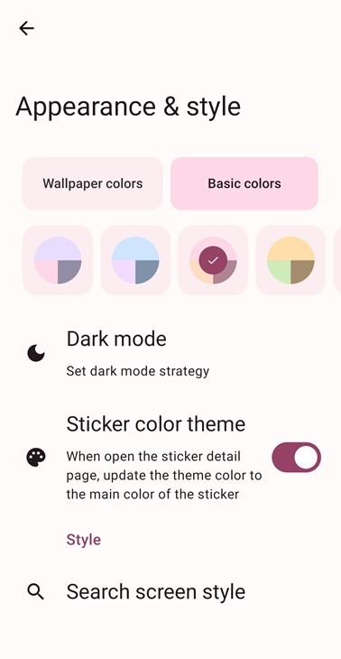

关于 Rays，斗图党最该知道的九件事
还在上千张表情包里翻不到想发的那张？用问答速查的方式把这款 Android 表情管理工具的定位、用法、坑点一次性讲透。
整理一篇关于 Rays 的快问快答——把这款 Android 端表情管理工具最核心的那些事，用读者真会问的九个问题串起来。
Rays 到底是干什么的，解决什么问题？
简单说，Rays 的官网上介绍说，这是一款专门给 Android 用户做的表情包本地管理工具。它解决的核心问题就是：你存了几百上千张表情包，但真要斗图时翻不到想用的那张。相册没有标签、聊天记录里图散在四处、换机就丢一半库存——这些尴尬 Rays 都针对性地提供了解法：统一收进本地库、给图加标签、支持关键词和相似搜索，还有自带的备份导入导出。
谁最需要装 Rays？
重度斗图党——表情包库超过两三百张、而且角色多分类杂的那种。如果你存了一堆原神、崩坏、崩铁相关的图，光"原神"两个字就能拉出几十张，那 Rays 的标签体系和搜索能力会直接让你告别手动翻。偶尔存几张表情凑个热闹的人用不上它，相册够用。
安装了之后第一步该做什么？
安装包从下载拿好之后，把散落在各处的表情统一收进来。Rays 支持从聊天记录保存、从相册导入、从文件管理器直接选图这几种方式。一次性把微信存的、QQ 存的、手机相册备份的全部导入，之后就永远只在一个地方找图了。导入完给常用的图打上标签——比如角色名（"派蒙""纳西妲"）、情绪（"懵圈""无语"）、场景（"截图""梗图"），这一步花点时间，后面找图就是一秒的事。
搜索表情时，关键词和标签有什么讲究？
标签是 Rays 里最重要的检索维度。搜标签时如果开了正则，可以做组合条件——比如 原神 (派蒙|纳西妲) 意思是同时包含"原神"且同时包含"派蒙或纳西妲"的图。这里有个容易踩的坑：空格代表 AND，竖线代表 OR，但竖线的优先级比空格低，原神 派蒙|崩坏 会被理解成"（原神 AND 派蒙）OR 崩坏"，跟你想的可能不一样。用括号明确优先级就不会错。
还没给图打过标签，记得长相但不记得名字怎么办？
用相似表情搜索。这是 Rays 跟其他工具拉开差距的关键能力：它不是做简单的图片哈希比对，而是用图像嵌入向量把每张图的视觉特征编码成一串数字，搜索时算向量距离——长得像的排在前面。场景很实用：你手头有一张"派蒙懵圈"的图，想找同角色同表情的变体，直接在图上点"搜索相似"，几秒就出来。结果太杂的话，再配合标签二次过滤，精准度就够了。

换手机了，表情包库怎么搬最稳？
不要用厂商的整机备份还原 Rays。小米换机、华为手机克隆、三星 Smart Switch 这些工具还原 Rays 大概率出问题——Android 版本跨代、厂商 ROM 定制差异、Rays 自身版本不匹配、OCR 缓存被系统当可清除缓存处理，都是常见坑。Rays 自己的导出导入才靠谱：导出格式是 Rays 定义的，包含表情图片、标签数据库、OCR 结果、AI 推荐缓存，导入时还会检查数据库 schema 版本做转换。最省心的方式是每月手动导出一次本地文件，换机时手动导入，两三分钟的事。
正则搜索经常搜不出来，问题可能出在哪？
三个高频坑。第一，写了正则忘了开正则开关——Rays 会把 ^原神$ 当成普通关键词搜，结果出来的是包含这整个字符串的图。第二，正则里混了中文标点——中文全角竖线 ｜ 和英文半角 | 效果完全不同，写正则前把输入法切到英文。第三，否定前瞻 (?!...) 这类高级语法 Rays 可能不支持，遇到要排除某些结果的场景，换"先收窄搜索域再手动排除"的思路更稳——比如把搜索域限定为标签、开正则搜包含条件，结果里手动挑掉不符合的。遇到拿不准的语法可以去Rays文档翻一下进阶说明。
Rays 的备份除了本地导出还有别的方式吗？
有 WebDAV 同步。如果你有自己的 WebDAV 服务端，可以在 Rays 里配置自动同步，数据持续保持最新，多设备也能共享。缺点是需要自己有 WebDAV 服务端。没有的话，手动导出成 zip 本地存或者丢网盘，已经够用了——反正 Rays 的数据格式是自包含的，只要文件还在就能导回来。
长期用 Rays 有什么习惯建议？
三个小习惯能让库越用越好用。第一，新图导入时顺手打标签，别攒着，标签越细搜索越准。第二，每月导出一次备份，库越大越要谨慎，清手机存储或更新大版本前一定要做。第三，正则搜索写之前先想清楚空格和竖线的组合逻辑，括号能解决八成优先级混淆。做到这三点，Rays 基本不会给你添乱。
最后一句：表情包超过两百张的 Android 斗图党，装一个，三分钟导完图，以后每次斗图都比对手快半拍。不想走 Google Play 的也可以直接去GitHub、Gitee、GitCode 拿包，三个仓库都同步更新。